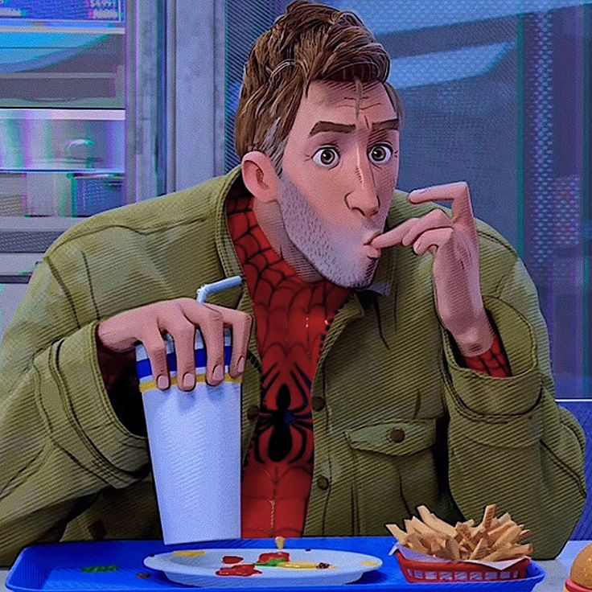
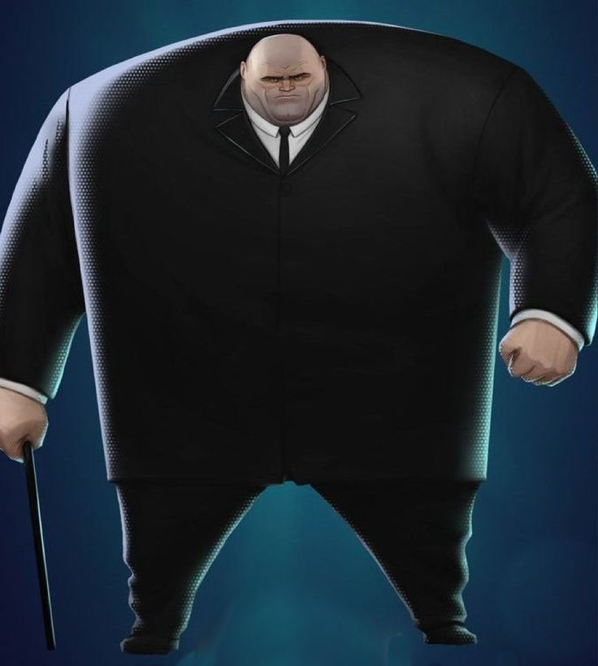

Personajes Principales

Miles Morales
El protagonista, un adolescente de Brooklyn que desarrolla poderes de araña...

Peter B. Parker
Una versión más mayor y desgastada de Spider-Man que llega al universo de Miles...

Gwen Stacy
Una heroína de un universo paralelo que se une a Miles...

Jefferson Davis
El padre de Miles Morales y un oficial de policía de Brooklyn...

Aaron Davis / Prowler
El tío de Miles, quien trabaja para Kingpin como el letal Merodeador...

Wilson Fisk / Kingpin
El villano principal, un poderoso jefe criminal...